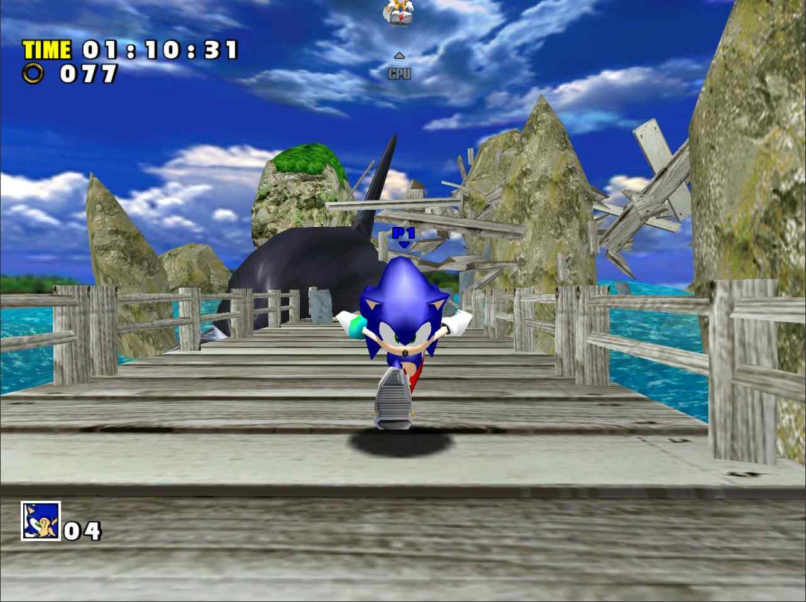

Review

There is a meme out there that goes, “Sonic had a rough transition to 3D”, implying that his games from the early 2000s are not good, despite the positive reception given to Sonic Adventure 1 and 2 at release. To try and settle the issue, and answer the question of “Should you play Sonic Adventure?” I’ve decided to review it.
Versions

Sonic Adventure was originally released for the SEGA Dreamcast and was later ported to GameCube as Sonic Adventure DX. The releases on Xbox 360 (which is backwards compatible with newer Xbox consoles), PS3, and PC through Steam are based on DX. Sonic Adventure DX is considered a bad port of the Dreamcast original, both in gameplay and visuals, and this probably contributes to the notion that the game is bad.
There are mods for the Steam version of SADX that restore it closer to the original game or combine the best of both versions, and I am reviewing this game with those fixes in mind.
Gameplay

There are 6 main stories in Sonic Adventure DX, which eventually lead into a Last Story.
Music and Sound
Like most Sonic Games, Sonic Adventure has a great soundtrack filled with some “bangers”, and I slightly prefer this game’s music to Adventure 2’s. My favorite music tracks are the invincibility music and the theme to Windy Valley. The English voice acting is pretty cheesy, but not annoying enough to switch to Japanese.
Closing Thoughts
Overall, Sonic Adventure is a good game, and Sonic had a good transition into 3D, at least as well as Mario’s. The game, like any other of the generation, has its flaws, such as the camera being a bit wonky at times, the need for mods to fix the bad PC port, and Big the Cat’s levels being slow and tedious. However, the game is still fun to play, and the different characters provide a variety of gameplay styles. SADX is currently $8 on Steam, $2 if you grab it on a sale. It can run on most PCs, is as fun as a game 5 times the price, and I say it’s a good buy.